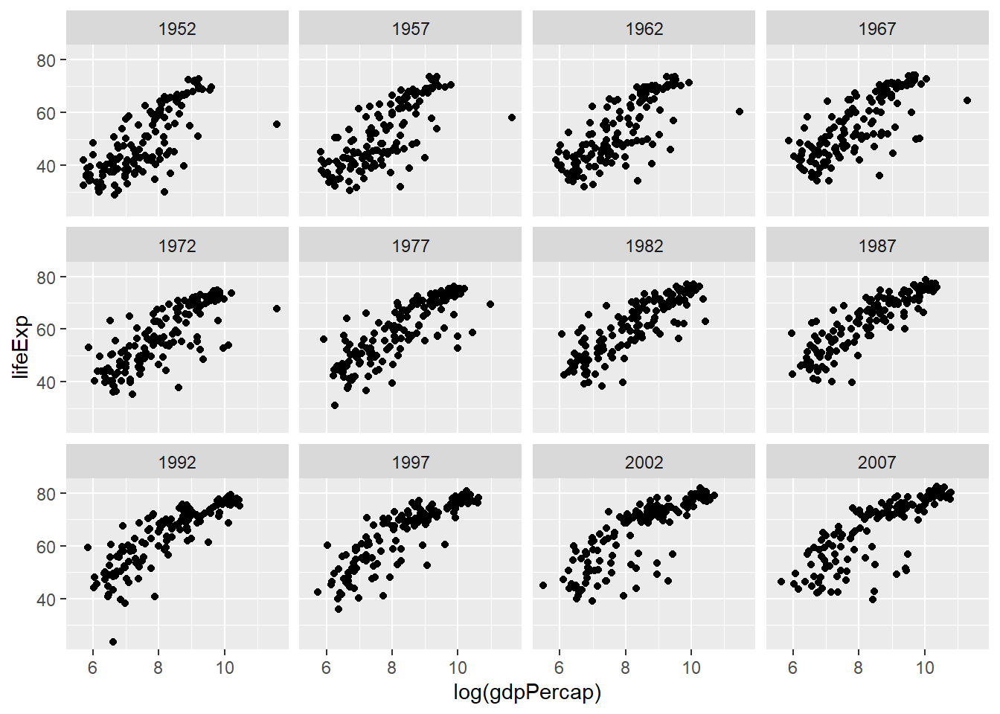
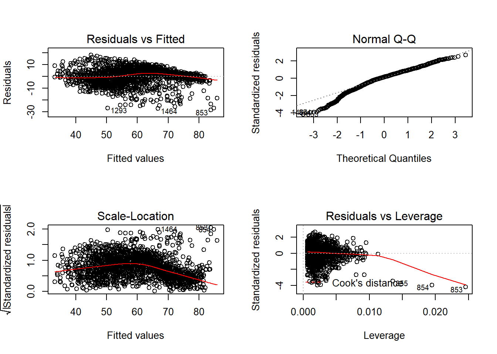
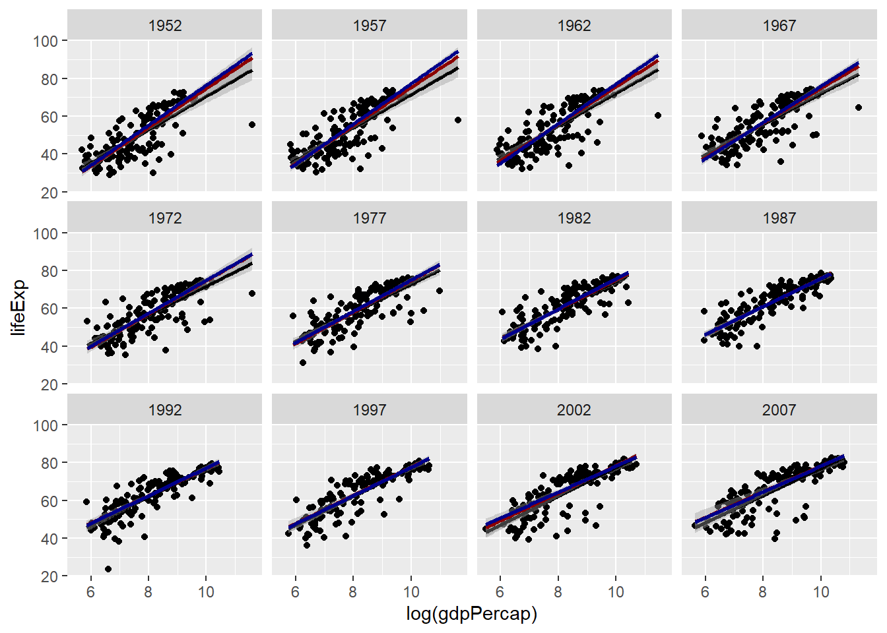
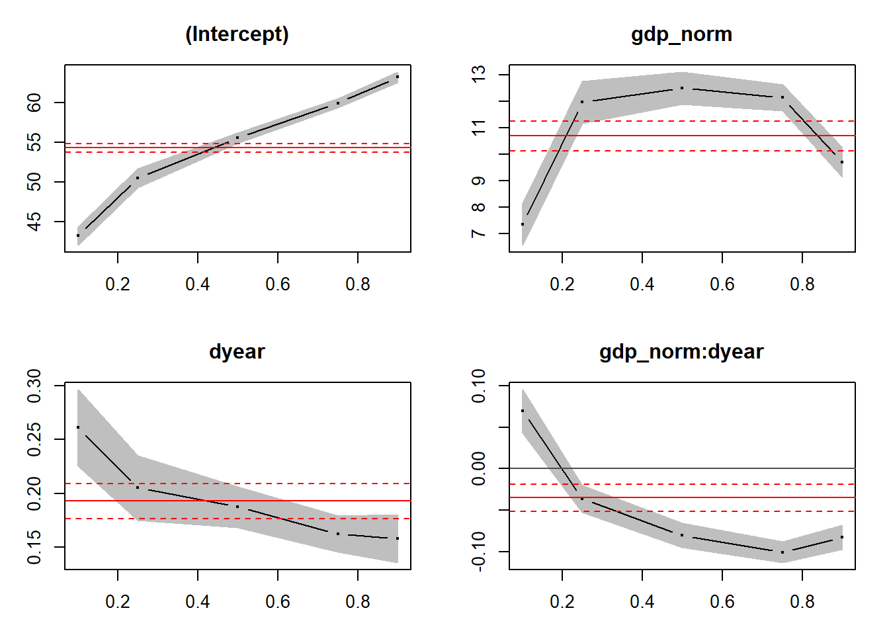
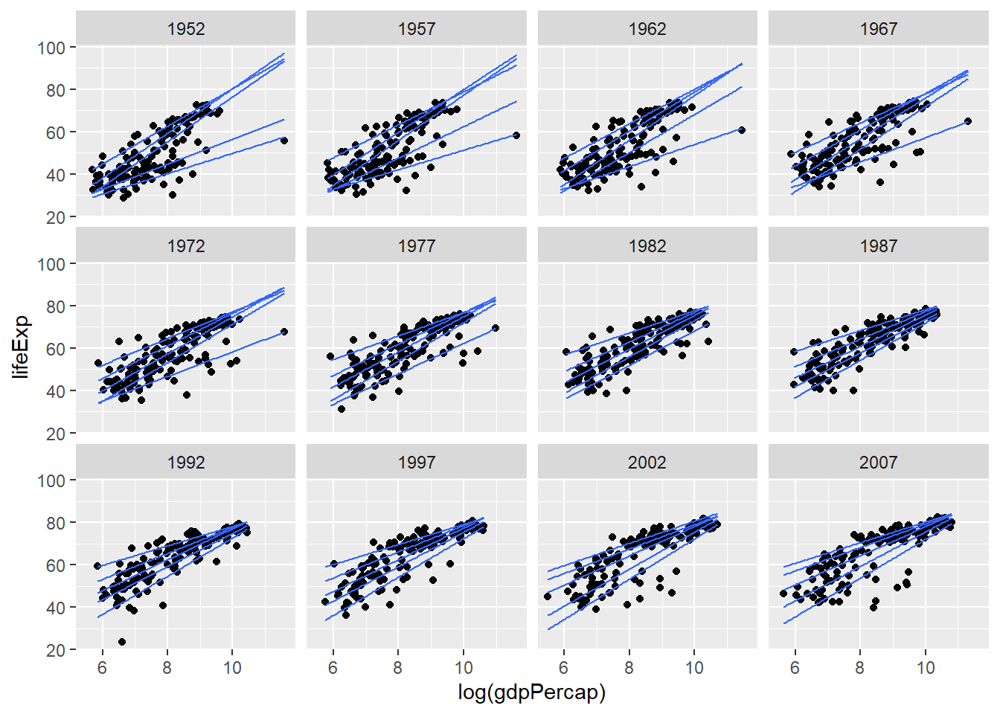

Cet exercice est basé sur le jeu de données gapminder du package du même nom.
Jennifer Bryan (2017). gapminder: Data from Gapminder. R package version 0.3.0. https://CRAN.R-project.org/package=gapminder
Ce jeu de données inclut l’espérance de vie (lifeExp), la population (pop) et le PIB par habitant (gdpPercap) pour 142 pays et 12 années (aux 5 ans entre 1952 et 2007).
library(gapminder)
str(gapminder)## Classes 'tbl_df', 'tbl' and 'data.frame': 1704 obs. of 6 variables:
## $ country : Factor w/ 142 levels "Afghanistan",..: 1 1 1 1 1 1 1 1 1 1 ...
## $ continent: Factor w/ 5 levels "Africa","Americas",..: 3 3 3 3 3 3 3 3 3 3 ...
## $ year : int 1952 1957 1962 1967 1972 1977 1982 1987 1992 1997 ...
## $ lifeExp : num 28.8 30.3 32 34 36.1 ...
## $ pop : int 8425333 9240934 10267083 11537966 13079460 14880372 12881816 13867957 16317921 22227415 ...
## $ gdpPercap: num 779 821 853 836 740 ...... + facet_wrap(~year).Quelles tendances générales observez-vous? Semble-t-il y avoir des valeurs extrêmes qui pourraient influencer fortement un modèle de régression? Si oui, essayez d’identifier ces données dans le tableau en vous basant sur la position des points dans le graphique.
Réponse
library(ggplot2)
ggplot(gapminder, aes(x = log(gdpPercap), y = lifeExp)) +
geom_point() +
facet_wrap(~year)
L’espérance de vie augmente avec log(gdpPercap) pour chaque année.
Pour les premières années, une des valeurs avec un PIB très élevé s’éloigne de la tendance, donc cette valeur extrême pourrait influencer fortement une régression. En cherchant les valeurs extrêmes de log(gdpPercap), on voit qu’il s’agit du Koweït entre 1952 et 1972.
library(dplyr)##
## Attaching package: 'dplyr'## The following objects are masked from 'package:stats':
##
## filter, lag## The following objects are masked from 'package:base':
##
## intersect, setdiff, setequal, unionfilter(gapminder, log(gdpPercap) > 11)## # A tibble: 5 x 6
## country continent year lifeExp pop gdpPercap
## <fct> <fct> <int> <dbl> <int> <dbl>
## 1 Kuwait Asia 1952 55.6 160000 108382.
## 2 Kuwait Asia 1957 58.0 212846 113523.
## 3 Kuwait Asia 1962 60.5 358266 95458.
## 4 Kuwait Asia 1967 64.6 575003 80895.
## 5 Kuwait Asia 1972 67.7 841934 109348.lm) pour déterminer l’effet du PIB par habitant, de l’année et de leur interaction sur l’espérance de vie. Pour faciliter l’inteprétation des coefficients, effectuez les transformations suivantes sur les prédicteurs:Prenez le logarithme de gdpPercap et normalisez-le avec la fonction scale. Rappel: scale(x) soustrait de chaque valeur de x leur moyenne et divise par leur écart-type, donc la variable résultante a une moyenne de 0 et un écart-type de 1; elle représente le nombre d’écarts-types au-dessus ou en-dessous de la moyenne.
Remplacez year par le nombre d’années écoulées depuis 1952.
Interprétez la signification de chacun des coefficients du modèle, puis consultez les graphiques de diagnostic. Les suppositions du modèle linéaire sont-elles respectées?
Réponse
gapminder <- mutate(gapminder, gdp_norm = scale(log(gdpPercap)), dyear = year - 1952)
mod_lm <- lm(lifeExp ~ gdp_norm * dyear, gapminder)
summary(mod_lm)##
## Call:
## lm(formula = lifeExp ~ gdp_norm * dyear, data = gapminder)
##
## Residuals:
## Min 1Q Median 3Q Max
## -28.340 -3.496 0.802 4.557 18.172
##
## Coefficients:
## Estimate Std. Error t value Pr(>|t|)
## (Intercept) 54.311695 0.324413 167.415 < 2e-16 ***
## gdp_norm 10.694128 0.340945 31.366 < 2e-16 ***
## dyear 0.192828 0.009923 19.433 < 2e-16 ***
## gdp_norm:dyear -0.034776 0.009774 -3.558 0.000384 ***
## ---
## Signif. codes: 0 '***' 0.001 '**' 0.01 '*' 0.05 '.' 0.1 ' ' 1
##
## Residual standard error: 6.854 on 1700 degrees of freedom
## Multiple R-squared: 0.719, Adjusted R-squared: 0.7185
## F-statistic: 1450 on 3 and 1700 DF, p-value: < 2.2e-16Interprétation des coefficients:
(Intercept): Lorsque gdp_norm et dyear sont égaux à zéro, donc un pays dans la moyenne du log(gdpPercap) en 1952, l’espérance de vie est de 54.3 ans.
gdp_norm: Lorsque dyear = 0 (en 1952), chaque écart-type au-dessus de la moyenne du log(gdpPercap) augmente l’espérance de vie de 10.7 ans.
dyear: Pour un pays dans la moyenne du log(gdpPercap), l’espérance de vie augmente de 0.19 ans par année.
gdp_norm:dyear: Pour chaque année, l’effet d’une augmentation unitaire de gdp_norm sur l’espérance de vie diminue de 0.034; OU pour chaque écart-type au-dessus de la moyenne du log(gdpPercap), l’effet du temps sur l’espérance de vie diminue de 0.034.
Autrement dit, les deux prédicteurs ont un effet positif sur la réponse, mais leur interaction est négative, donc quand un augmente, l’effet de l’autre devient moins important.
par(mfrow = c(2,2))
plot(mod_lm)
Sur le graphique des résidus vs. valeurs attendues, on voit que la variance diminue lorsque la valeur prédite est plus élevée (variance non homogène). Aussi, sur le graphique des effets de levier, on voit bien les points extrêmes, même si la distance de Cook ne dépasse pas le seuil de 0.5 ou 1 (avec beaucoup de points de données, cela prend des valeurs très extrêmes pour obtenir une distance de Cook aussi grande).
lmrob du package robustbase) et la régression de la médiane (fonction rq du package quantreg, en choisissant seulement le quantile médian). Expliquez comment les estimés des coefficients et leurs erreurs-types diffèrent entre les trois méthodes.Réponse
library(robustbase)
mod_lmrob <- lmrob(lifeExp ~ gdp_norm * dyear, gapminder)
# print(summary) avec showAlgo = FALSE simplifie le sommaire
print(summary(mod_lmrob), showAlgo = FALSE) ##
## Call:
## lmrob(formula = lifeExp ~ gdp_norm * dyear, data = gapminder)
## \--> method = "MM"
## Residuals:
## Min 1Q Median 3Q Max
## -34.838 -3.912 0.133 3.658 18.625
##
## Coefficients:
## Estimate Std. Error t value Pr(>|t|)
## (Intercept) 55.562627 0.352056 157.823 <2e-16 ***
## gdp_norm 12.590304 0.311367 40.436 <2e-16 ***
## dyear 0.178728 0.010456 17.094 <2e-16 ***
## gdp_norm:dyear -0.075843 0.008496 -8.927 <2e-16 ***
## ---
## Signif. codes: 0 '***' 0.001 '**' 0.01 '*' 0.05 '.' 0.1 ' ' 1
##
## Robust residual standard error: 5.467
## Multiple R-squared: 0.797, Adjusted R-squared: 0.7967
## Convergence in 9 IRWLS iterations
##
## Robustness weights:
## 8 observations c(37,40,167,853,854,855,1293,1464)
## are outliers with |weight| = 0 ( < 5.9e-05);
## 147 weights are ~= 1. The remaining 1549 ones are summarized as
## Min. 1st Qu. Median Mean 3rd Qu. Max.
## 0.0004047 0.8444000 0.9451000 0.8735000 0.9859000 0.9990000library(quantreg)## Loading required package: SparseM##
## Attaching package: 'SparseM'## The following object is masked from 'package:base':
##
## backsolvemod_rq <- rq(lifeExp ~ gdp_norm * dyear, tau = 0.5, data = gapminder)
summary(mod_rq)## Warning in summary.rq(mod_rq): 3 non-positive fis##
## Call: rq(formula = lifeExp ~ gdp_norm * dyear, tau = 0.5, data = gapminder)
##
## tau: [1] 0.5
##
## Coefficients:
## Value Std. Error t value Pr(>|t|)
## (Intercept) 55.57793 0.37879 146.72594 0.00000
## gdp_norm 12.51016 0.36768 34.02426 0.00000
## dyear 0.18736 0.01142 16.41102 0.00000
## gdp_norm:dyear -0.07982 0.00869 -9.18818 0.00000Notez que l’avertissement (3 non-positive fis) pour la régression quantile peut être résolu en changeant la méthode d’estimation des intervalles de confiance dans summary. Par exemple: summary(mod_rq, se = "boot") pour remplacer la méthode par défaut par le bootstrap.
Comparaison des résultats:
Les coefficients obtenus par la régression robuste et la régression de la médiane sont similaires, mais la régression robuste a des erreurs-types plus faibles, ce qui confirme l’idée que cette méthode est plus efficace que la médiane tout en étant presque aussi robuste aux valeurs extrêmes.
Pour ces deux méthodes, l’effet de gdp_norm est plus grand et l’interaction est plus négative contrairement au résultat obtenu par lm. On se souvient que le Koweït avait un PIB très élevé pour les premières années sans avoir une espérance de vie aussi élevée. Dans ce cas, cette valeur extrême menait à sous-estimer la tendance générale de l’effet du PIB et par conséquent aussi sous-estimer comment cette tendance changeait avec le temps (interaction).
ggplot, vous pouvez utiliser la fonction geom_smooth avec method = "lm" pour la régression linéaire et method = "lmrob" pour la régression robuste. Pour la régression de la médiane, vous pouvez utiliser geom_quantile tel que vu dans les notes.Réponse
ggplot(gapminder, aes(x = log(gdpPercap), y = lifeExp)) +
geom_point() +
geom_smooth(method = "lm", color = "black") +
geom_smooth(method = "lmrob", color = "darkred") +
geom_quantile(quantiles = 0.5, color = "darkblue", size = 1) +
facet_wrap(~year)
Réponse
Oui, car la variance n’est pas homogène, elle semble moins élevée lorsque le PIB est élevé, donc ce prédicteur aura un effet différent sur les différents quantiles de l’espérance de vie.
(0.1, 0.25, 0.5, 0.75, 0.9). Comparez visuellement l’effet des prédicteurs sur chaque quantile.Réponse
mod_quant <- rq(lifeExp ~ gdp_norm * dyear, tau = c(0.1, 0.25, 0.5, 0.75, 0.9), data = gapminder)
plot(summary(mod_quant))
L’effet du PIB sur l’espérance de vie est plus important pour les quantiles centraux de l’espérance de vie, le prédicteur a moins d’effet sur le quantiles à 10% et 90%.
L’effet de l’année est plus important pour le quantile à 10% et diminue pour les quantiles plus élevés. Donc l’augmentation de l’espérance de vie depuis 1952 est davantage due à une augmentation des valeurs plus faibles de la distribution de l’espérance de vie, plutôt qu’à ne augmentation des valeurs les plus élevées.
L’interaction est positive pour le quantile à 10% (l’effet du PIB est plus important pour les années plus récentes) et négatif pour les autres quantiles (l’effet du PIB devient moins important avec le temps).
Réponse
ggplot(gapminder, aes(x = log(gdpPercap), y = lifeExp)) +
geom_point() +
geom_quantile(quantiles = c(0.1, 0.25, 0.5, 0.75, 0.9)) +
facet_wrap(~year)
Oui, il semble que la valeur extrême entre 1952 et 1972 influence le quantile à 10%. Dans ce cas, les résultats du numéro précédent où le quantile à 10% diffère du reste des données (l’effet du PIB est moins prononcé, l’interaction est positive) peuvent être le résultat de cette valeur extrême.
Bien que ce jeu de données soit utile pour illustrer les concepts de régression robuste et de régression quantile, soulignons que ce type d’analyse statistique comparant des variables mesurées au niveau national comporte plusieurs limites:
On ne peut pas supposer que les associations détectées s’appliquent à une échelle plus petite (ex.: le lien entre espérance de vie et revenu en comparant les moyennes nationales n’est pas nécessairement le même que le lien entre espérance de vie et revenu au niveau des individus habitant chaque pays).
Les moyennes calculées dans différents pays ne sont pas des observations indépendantes, car les conditions environnementales, sociales et économiques sont corrélées entre pays proches.
Il y a de nombreux facteurs qui différencient les pays, donc il est difficile d’interpréter une association comme un lien de cause à effet.
Beaucoup d’articles, en particulier dans les domaines des sciences sociales, ont été publiés au sujet des méthodes à suivre pour réaliser ce type de comparaisons internationales (cross-country comparisons).